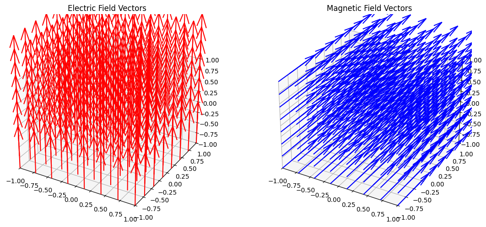
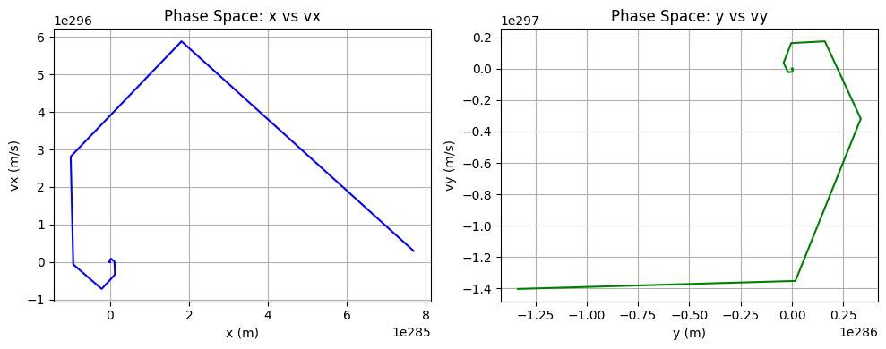
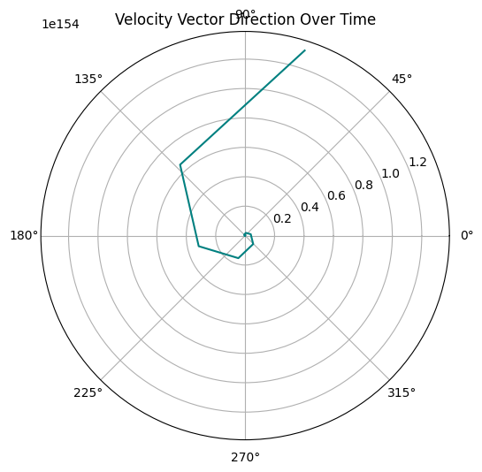

Problem 1
Lorentz Force Simulation: Dynamics of Charged Particles in Electromagnetic Fields
Introduction
This project simulates the motion of a charged particle under the combined influence of electric (\( \vec{E} \)) and magnetic (\( \vec{B} \)) fields, using the classical Lorentz force law:
Where:
- \( \vec{F} \): total force acting on the particle (Newtons)
- \( q \): electric charge of the particle (Coulombs)
- \( \vec{E} \): electric field vector (V/m)
- \( \vec{v} \): instantaneous velocity of the particle (m/s)
- \( \vec{B} \): magnetic field vector (Tesla)
This force governs many fundamental processes in plasma physics, space science, and accelerator technology.
Project Goals
- Simulate the 3D motion of charged particles under various field configurations
- Numerically integrate Newton’s second law using the Euler method
- Analyze motion types: circular, helical, linear, and drift trajectories
- Derive physical quantities like the Larmor radius and drift velocity
- Visualize results with interactive and static 3D plots
Physical Concepts
1. Pure Magnetic Field (\( \vec{E} = 0 \))
- The force is always perpendicular to the velocity
- The particle performs uniform circular or helical motion
- No energy is gained or lost (speed remains constant)
2. Pure Electric Field (\( \vec{B} = 0 \))
- The particle undergoes uniform linear acceleration
- Kinetic energy increases with time
- Trajectory is a parabola in time
3. Crossed Fields (\( \vec{E} \perp \vec{B} \))
- Particle drifts at velocity:
$$ \vec{v}_d = \frac{\vec{E} \times \vec{B}}{B^2} $$ - Superposition of drift and circular motion: cycloidal trajectory
4. Larmor Radius
The radius of circular motion in a uniform magnetic field is given by:
Where \( v_\perp \) is the component of velocity perpendicular to \( \vec{B} \).
Python Simulation Code
The following code uses NumPy and Matplotlib to simulate and plot the trajectory using the Euler method for numerical integration:
import numpy as np
import matplotlib.pyplot as plt
from mpl_toolkits.mplot3d import Axes3D
# -------------------------------
# 1. Define Physical Parameters
# -------------------------------
q = 1.6e-19 # Particle charge (C)
m = 9.11e-31 # Particle mass (kg)
E = np.array([0.0, 0.0, 0.0]) # Electric field (V/m)
B = np.array([0.0, 0.0, 1.0]) # Magnetic field (T)
v0 = np.array([1e6, 0.0, 1e6]) # Initial velocity (m/s)
x0 = np.array([0.0, 0.0, 0.0]) # Initial position (m)
# -------------------------------
# 2. Time Discretization
# -------------------------------
dt = 1e-11 # Time step (s)
t_max = 1e-7 # Total time (s)
steps = int(t_max / dt)
# -------------------------------
# 3. Initialize Arrays
# -------------------------------
x = np.zeros((steps, 3))
v = np.zeros((steps, 3))
x[0] = x0
v[0] = v0
# -------------------------------
# 4. Euler Method Loop
# -------------------------------
for i in range(steps - 1):
F = q * (E + np.cross(v[i], B))
a = F / m
v[i + 1] = v[i] + a * dt
x[i + 1] = x[i] + v[i] * dt
# -------------------------------
# 5. 3D Trajectory Plot
# -------------------------------
fig = plt.figure(figsize=(10, 6))
ax = fig.add_subplot(111, projection='3d')
ax.plot(x[:, 0], x[:, 1], x[:, 2], label="Particle Trajectory", color='navy')
ax.set_xlabel('x (m)')
ax.set_ylabel('y (m)')
ax.set_zlabel('z (m)')
ax.set_title('Charged Particle Trajectory in Electromagnetic Field')
ax.legend()
plt.tight_layout()
plt.show()
Observations
- Helical Motion: When \( \vec{v} \) has both perpendicular and parallel components relative to \( \vec{B} \), a helical path forms.
- Drift Motion: In \( \vec{E} \times \vec{B} \) configuration, a constant lateral drift occurs.
- Acceleration: In the presence of an electric field, energy increases over time.
- Confinement: Stronger \( B \) fields reduce the radius, improving magnetic confinement.
Real-World Applications
| System | Role of Lorentz Force |
|---|---|
| Cyclotron | Circular acceleration of particles via magnetic fields |
| Mass Spectrometry | Charge-to-mass separation using \( \vec{v} \times \vec{B} \) |
| Fusion Reactors | Plasma confinement with strong \( \vec{B} \) and \( \vec{E} \) fields |
| Auroras | Charged solar particles guided by Earth's magnetic field |
| Van Allen Belts | Trapped particle dynamics governed by Earth's magnetosphere |
Parameter Exploration Ideas
To study different scenarios, try changing:
q,m→ particle identity (electron, proton, ion, etc.)E,B→ field directions and magnitudesv0→ perpendicular vs. parallel velocity componentsdt,t_max→ resolution and simulation span
For instance:
- Set \( \vec{E} = [1e4, 0, 0] \), \( \vec{B} = [0, 0, 1] \) for E × B drift
- Try \( v_0 = [0, 1e6, 0] \) to isolate circular motion
- Simulate multiple particles or particles of opposite charge
Conclusion
This simulation provides a clear and flexible numerical tool to understand the behavior of charged particles under electromagnetic forces. It highlights:
- Rotational motion in magnetic fields
- Linear acceleration in electric fields
- Guided drift motion in combined fields
The approach can be extended to:
- Use more accurate integration (e.g., Runge-Kutta)
- Introduce spatially or temporally varying fields
- Model multi-particle plasma dynamics
- Include relativistic corrections for high-speed particles
Understanding Lorentz force dynamics is crucial in disciplines like astrophysics, plasma engineering, space weather modeling, and particle accelerator design.


